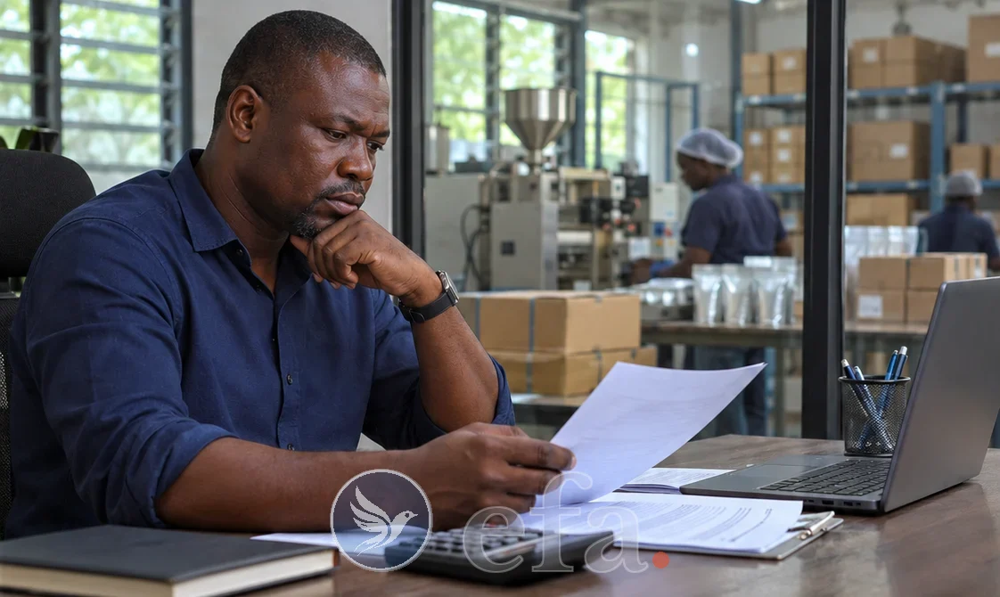
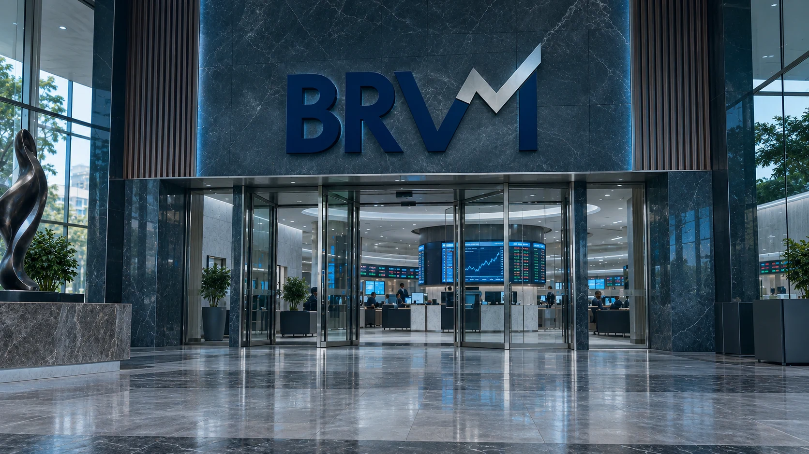
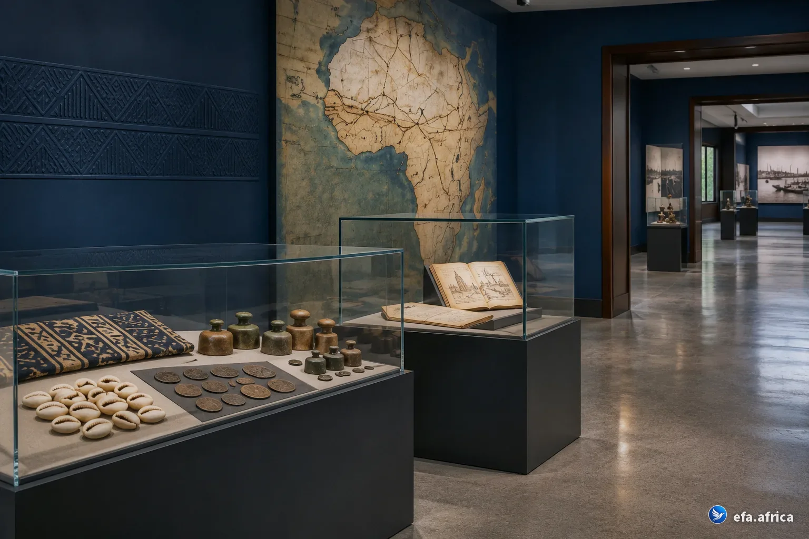
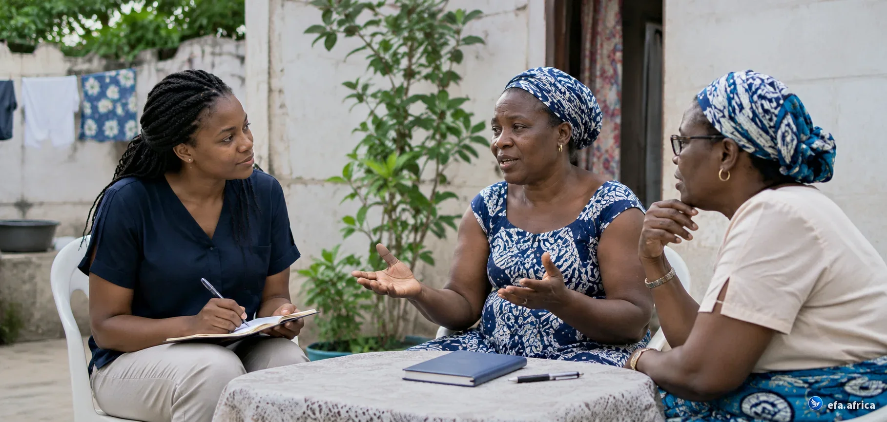

Apprendre.
Dès 1 min, gratuit, depuis votre téléphone : un sujet qui vous concerne, une explication claire et des outils pour essayer avec vos chiffres.
Commencer à apprendre Étudiant ? Demandez votre Pass Étudiant par votre école, gratuitL’ARGENT S’APPREND · UNE EXPÉRIENCE EFA
Votre bilan financier. Votre idée de business. Vos premiers investissements.
La finance, avec nos réalités africaines.
Trouver mon point de départGratuit pour commencer, dès 1 min.

valo.Combien vaut mon entreprise ?Explorer la trésorerie de l’activité et sa valeur possible.Estimer mon activité →Le fondateur
Après une décennie dans la banque, l’investissement et le conseil, il a créé EFA pour rendre l’argent plus compréhensible à partir des réalités africaines.
Notre promesse
Vous pouvez explorer les contenus, suivre les parcours et utiliser les outils à votre rythme.
Étudiant ? Demandez votre Pass Étudiant par votre école : ateliers et cours ouverts, gratuitement.
Commencer à apprendre → PayantÊtre accompagné personnellementSi vous souhaitez être accompagné personnellement, certains ateliers et coachings sont payants.
Voir les ateliers → Pris en chargeFinancé par votre organisationUne organisation peut aussi financer un parcours pour ses salariés, membres ou bénéficiaires.
Pour les organisations →VOTRE CHEMIN AVEC EFA
Chez EFA, apprendre est gratuit. Si vous souhaitez un accompagnement personnel ou un programme animé pour votre organisation, le prix est présenté avant votre inscription.
Dès 1 min, gratuit, depuis votre téléphone : un sujet qui vous concerne, une explication claire et des outils pour essayer avec vos chiffres.
Commencer à apprendre Étudiant ? Demandez votre Pass Étudiant par votre école, gratuitVous n’êtes pas seul : des ateliers sur votre cas, avec Élysée Johnson ou à votre rythme. Quatre sont gratuits, les autres s’ouvrent avec des crédits.
Choisir mon atelier
Tout au même endroit : les acteurs du marché, le marché du jour, les SGI et les questions à poser avant de signer.
Préparer mon lancementLe chemin EFA
Quatre marches, dans cet ordre. La Bourse vient en dernier : quand le reste tient, on investit, accompagné.
Où part chaque franc, un budget qui tient même quand le revenu varie, les frais du mobile money.
Commencer, c’est gratuit →Où est passé mon argent ?Une réserve pour les coups durs, des dettes remises en ordre, aider la famille sans s’épuiser.
Gratuit →Ma réserve de sécuritéLa tontine qui devient une spirale, les placements expliqués, une grosse somme décidée avant qu’elle arrive.
Faire grandir →Ma tontine devient une spiraleLa Bourse (BRVM) pas à pas, jusqu’à votre premier ordre passé et compris, avec le coach à chaque marche.
Mes premiers pas en Bourse →Offert avec le code d’ouverture01 · APPRENDRE · COMMENCEZ FACILEMENT
Dès 1 min, gratuit, depuis votre téléphone. C’est pensé pour nous : des situations d’ici, des explications claires et des exercices concrets, que vous partiez de zéro ou que vous ayez déjà un projet.
L’école EFA est votre parcours principal : trois cycles, 23 modules, du premier budget au patrimoine.
Votre premier pas
Question 1 sur 2 · Que voulez-vous accomplir ?
Ou explorez tous les contenus
Deux questions pour savoir par où commencer.
↗DiagnosticDiagnostic financierSix minutes pour faire le point : budget, épargne, dettes.
↗Parcours principalL’école EFATrois cycles, Fondations, Maîtrise et Patrimoine, du diagnostic au certificat.
↗OutilsTous les outils gratuitsBudget, épargne, diagnostic, Dico : la boîte à outils complète.
↗GuideEly, le guide EFAPosez vos questions sur le budget, la tontine ou l’épargne.
↗50/30/20, enveloppes, base zéro, adaptés aux réalités africaines.
↗LeçonBudget et mobile moneyNe plus perdre le fil de ses petites dépenses.
↗LeçonLes engagements et les exceptionsLoyer, tontine, envois aux parents : ce qui part avant de choisir.
↗LeçonConsommer et acheterInflation, crédit chez le commerçant, négocier.
↗LeçonRenégocier une detteQuand les mensualités ne passent plus : quoi demander, à qui.
↗LeçonÉpargner : par où commencerSe payer en premier, avec un petit revenu et la famille.
↗LeçonOù garder sa réserve ?Banque, microfinance ou mobile money.
↗Une méthode pour bien décider, avec Koffi.
↗QuestionDois-je prêter 300 000 FCFA à ma sœur ?La réponse en 30 secondes, puis cinq points à vérifier.
↗LeçonL’aîné, assureur de la familleLa solidarité africaine, une assurance sans contrat.
↗LeçonAvant l’arrivée d’un enfantLister les dépenses et vérifier ce qui est couvert.
↗LeçonLes études des enfants et l’héritageChiffrer tôt, puis préparer ce que la famille devra savoir.
↗LeçonAprès le décès d’un procheLes premières décisions d’argent, ce qui presse et ce qui attend.
↗ListeLes papiers que ma famille doit retrouverComptes, tontines, dettes, assurances, terrain.
↗LeçonCotiser depuis l’étrangerDiaspora : transferts, chantier, retraite.
↗Un revenu stable à partir d’une activité qui varie.
↗LeçonSéparer les pochesMon argent, celui de l’activité, celui qu’on m’a confié.
↗LeçonAcheter un terrain sans se faire avoirLes papiers à vérifier, de l’attestation villageoise au titre foncier.
↗LeçonLe budget du chantierConstruire par étapes, payer à l’avancement.
↗Des épisodes d’une minute avec Koffi.
↗DicoLe Dico EFAUne notion à la fois, en langage clair.
↗BibliothèqueLa bibliothèque EFALivres, musée de l’économie, capitaines d’industrie.
↗LectureL’Homme le plus riche de BabyloneUne lecture commentée de la bibliothèque.
↗ExpositionLa balade de l’économieSix salles et huit jeux : marchés, banques, franc CFA.
↗Votre premier pas
Tout ce qui se fait ensemble
Diagnostic, parcours et suivi pour vos salariés, membres ou bénéficiaires.
↗ProgrammeComposer le programmeChoisir les modules de votre organisation en ligne.
↗AccèsRejoindre le programme de mon organisationEntrez le code donné par votre structure.
↗Tableau de bordEspace organisationQui s’est inscrit, qui avance, qui a terminé.
↗ContactPrendre rendez-vousÉchanger avec EFA sur votre programme.
↗
MUSÉE EFA · GRATUITLe muséeUn concept original EFA
Le cercle, c’est l’argent qui tourne et repart. La spirale, c’est l’argent dont une part reste à chaque tour, et qui grandit. Le concept est né de la Tribune n° 1 d’Élysée Johnson et des milliers de réactions qu’elle a suscitées.
Le cercle devient une spirale quand le groupe garde une part.
02 · ÊTRE COACHÉ · VOUS ÊTES ACCOMPAGNÉ
Quatre ateliers sont gratuits, les autres s’ouvrent avec des crédits (3 offerts avec votre email). Vingt et un ateliers, dont dix approfondis avec Élysée Johnson : un sujet précis, un exercice fait sur votre cas, un prochain pas clair.
Votre mois réel, rangé en trois poches.
Ce qui est engagé, ce qui peut se renégocier, ce que l’on peut dire.
Un montant tenable, mis de côté chaque mois, et son suivi.
Ce que l’on veut financer, et quand.
Comparer ce qui rapporte, ce qui immobilise, ce qui protège.
Ce qu’il faut vérifier avant de signer.
Chiffre d’affaires, coûts, marge : la vraie part qui reste.
Anticiper les creux avant qu’ils arrivent.
Les options, leur coût, et ce qu’on vous demandera.
Faire reconnaître ce que vous savez : certificat Fondations · Maîtrise · Patrimoine · CEFA ★Espaces dédiés : Cadres · Patrimoine · DirigeantsVous exercez dans la finance et aimez transmettre ? Proposer un atelier
Présentation illustrative · intervenants et programmes à confirmerPour vous, à partir de votre réalité
Une idée, un projet ou une décision financière en tête ? Passez à la pratique avec les outils et les parcours EFA.
Choisir où investir, savoir quoi vérifier, et avancer pas à pas avant d’engager un franc.
La Bourse, la pierre, l’épargne et l’assurance-vie : choisissez votre porte, nous vous guidons pas à pas.
Choisir ma porte →Deux outils pour aller plus loin
Demain, avec EFADes partenaires sélectionnés et des clubs d’investissement : nous l’annoncerons ici, avec le rôle d’EFA affiché avant tout engagement.
Aucun acteur représenté n’est présenté comme partenaire d’EFA. Le rôle et la rémunération éventuelle d’EFA seront indiqués avant toute mise en relation.
04 · LE MÉDIA EFA
Une actualité décryptée, une idée qui questionne, une étude qui ouvre des perspectives. Trois façons d’apprendre à mieux décider.
Des convictions argumentées sur l’argent, la confiance et ce que nous pouvons construire.
Découvrir les tribunes d’Élysée JohnsonObserver les pratiques, vérifier les sources et explorer les choix de demain.
Découvrir les étudesIls l’ont dit
Des retours de membres de la communauté, de professionnels et de premiers utilisateurs. Reproduits tels quels, avec leur accord.
J’ignorais que la gestion de l’argent s’apprend.
J’ai personnellement suivi beaucoup de conférences et de formations sur la gestion de l’argent, mais je n’en ai pas encore vu une qui soit basée sur nos réalités africaines.
Rien ne m’a manqué, car tout y est.
Ce qui m’a surpris, ce sont les propositions de réponses : concises, précises et surtout compréhensibles par tous. J’ai été surpris par des choses que je pratiquais avant en pensant que c’était le meilleur, alors que je me trompais.
Ce n’est pas juste de l’info : c’est un outil d’accompagnement.
Le site est allé au-delà de mes espérances. Ce n’est pas juste pour de l’info institutionnelle. C’est un outil d’accompagnement aujourd’hui.
Je ne savais pas où commencer.
Je ne savais pas où commencer avec ma volonté d’investir en Bourse. J’ai trouvé sur EFA.
On va passer du cercle à la spirale.
Apprendre la finance sans les mots très techniques, c’est vraiment fait pour nous. Quand j’ai vu la tontine, j’étais « wow ».
EFA a touché quelque chose de fort.
C’est très professionnel. Je crois qu’EFA a touché quelque chose de fort.
C’est Dieu qui va vous remercier.
C’est Dieu qui va vous remercier pour les outils que vous nous permettez d’avoir.
Celui qui veut une éducation financière, qu’il utilise EFA.
Ça donne de bonnes orientations. Ça permet d’anticiper les déficits et d’être rigoureux avec son argent. Sur le site, c’est dynamique, bien présenté et vraiment facile à lire, avec de bonnes informations sur la tontine.
Complet, et pensé dans le détail.
J’ai pris le temps de parcourir EFA : apprendre, faire le point, se lancer, tout y est. On sent un vrai travail de réflexion et de conception derrière chaque page.
Ça a l’air bien fait, c’est bien pensé.
Ce que j’ai apprécié : tu offres une large gamme de possibilités aux gens, en les renseignant dessus. Et aussi la possibilité d’être coaché. C’est du bon travail.
05 · L’enquête en cours

La tontine fait circuler l’argent. Mais que devient-il une fois votre tour reçu ? Racontez votre expérience en dix minutes, ou découvrez les premières tendances de l’enquête.
L’ARGENT S’APPREND.
QUESTIONS FRÉQUENTES
Non. Les parcours partent d’exemples concrets et introduisent les notions progressivement.
Les contenus d’Apprendre et les outils sont ouverts à tous. Côté ateliers, quatre sont gratuits sans inscription ; les autres s’ouvrent avec des crédits (1 crédit = 10 000 FCFA en phase de test) : 2 crédits pour un atelier enregistré, 5 à 15 avec Élysée Johnson. Votre email vous offre 3 crédits, de quoi ouvrir le cours « Mes premiers pas en Bourse ».
Non. Les domaines affichés sont une proposition éditoriale. Les noms, cours et modalités seront ajoutés après confirmation.
Pas encore. Les fiches de Se lancer sont des emplacements de travail. Aucune SGI n’est partenaire à ce jour, et le rôle d’EFA sera indiqué avant tout engagement.
Non. Cette expérience explique des mécanismes et aide à formuler des questions. Elle ne recommande aucun produit financier.
Non. Le calculateur de cette version locale fonctionne dans votre navigateur et n’envoie pas vos chiffres.
C’est fait pour vous.
La finance, avec nos réalités africaines.
C’est pensé pour nousOn commence dès 1 minOn n’est pas seulTout au même endroit